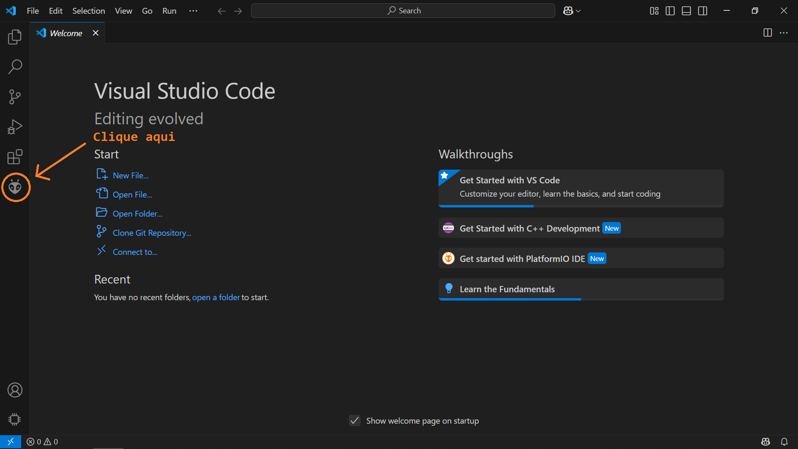
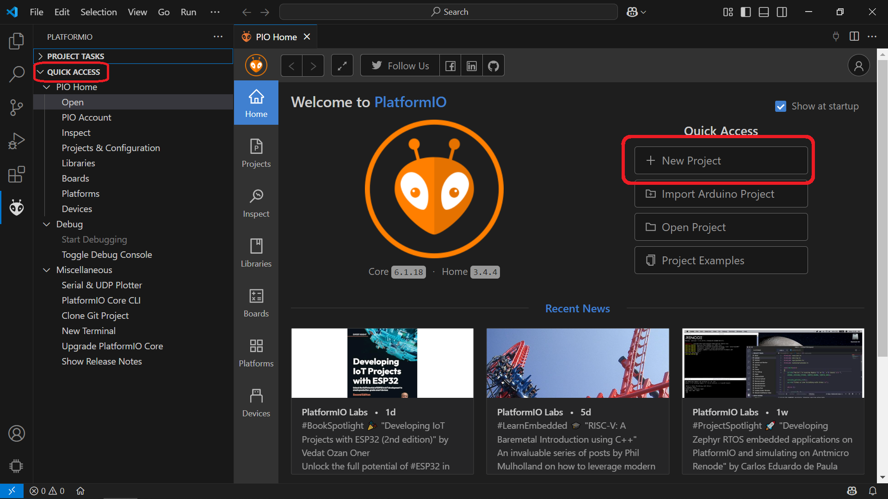
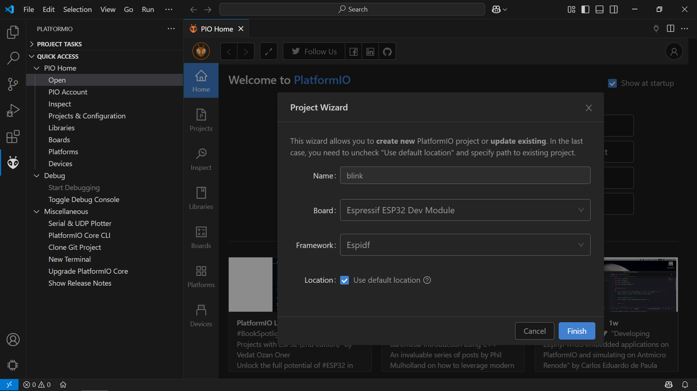
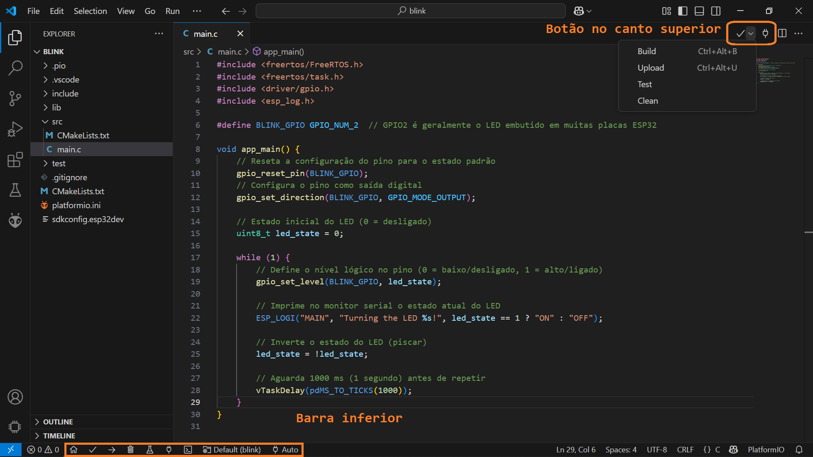

Ambiente de Desenvolvimento
Apresentação das ferramentas utilizadas para desenvolvimento das atividades da disciplina.
Visual Studio Code
O VS Code é um editor de código-fonte desenvolvido pela Microsoft, conhecido por sua grande quantidade de extensões e facilidade de personalização para desenvolver com diversas stacks de tecnologias. Entre tantas outras funcionalidades, possui suporte a diversas linguagens de programação, incluindo C/C++, integração com ferramentas de versionamento de código, sistema de depuração, ferramentas para testes, entre outras.
Para instalar o VS Code, acesse o site oficial e faça o download do instalador para o seu sistema operacional. Além disso, é necessario instalar algumas extensões no editor para trabalhar com as placas de prototipação:
Extensão C/C++: reúne ferramentas essenciais para o desenvolvimento em C/C++, oferecendo suporte para edição, compilação e depuração, autocompletar e navegação em projetos.
Extensão PlatformIO IDE: ecosssistema de ferramentas voltada para programação embarcada, oferece um ambiente para desenvolver em uma ampla variedade de microcontroladores e placas.
PlatformIO IDE
O PlatformIO IDE é um ambiente de desenvolvimento integrado para firmware e IoT, voltado para programação embarcada de forma profissional e moderna. Os principais recursos incluem:
Suporte a várias placas de prototipação e plataformas de desenvolvimento.
Ferramentas de depuração
Ferramentas de testes
Analisador de código estático
Gereciador de bibliotecas
Desenvolvimento remoto
Antes de prosseguir, verifique os requisitos de sistema para extensão do platformIO IDE funcionar corretamente. Após a instalação e inicialização com sucesso, existem algumas formas para criar um novo projeto. A forma mais simples é através da interface gráfica do editor, acessando na barra lateral o icone do PlatformIO IDE.

Em seguida, selecione a opção “Quick Acess > Pio Home > Open” e uma nova aba será aberta na interface do VS Code. Nessa nova aba, clique em “New Project”, para abrir um poup-up com opções para criar um novo projeto.

No pop-up, tem-se quatro opções para criar um novo projeto, depois de preencher os campos, clique em Finish:
Name: nome do projeto e nome do diretório onde o projeto será criado, escolha um nome que identifique o projeto.
Board: placa de prototipação a ser utilizada, selecione Espressif ESP32 Dev Module.
Framework: framework de desenvolvimento a ser utilizado, selecione Espidf.
Location: local onde o projeto será criado, escolha uma pasta facilmente acessível.

Esse processo pode demorar alguns minutos para ser concluído, após isso, o projeto estará criado e pronto para ser editado. Copie o código abaixo e cole no arquivo src/main.c para testar a placa. O código faz o LED embutido na placa piscar a cada 1 segundo.
#include <freertos/FreeRTOS.h>
#include <freertos/task.h>
#include <driver/gpio.h>
#include <esp_log.h>
#define BLINK_GPIO GPIO_NUM_2 // GPIO2 é geralmente o LED embutido em muitas placas ESP32
void app_main() {
// Reseta a configuração do pino para o estado padrão
gpio_reset_pin(BLINK_GPIO);
// Configura o pino como saída digital
gpio_set_direction(BLINK_GPIO, GPIO_MODE_OUTPUT);
// Estado inicial do LED (0 = desligado)
uint8_t led_state = 0;
while (1) {
// Define o nível lógico no pino (0 = baixo/desligado, 1 = alto/ligado)
gpio_set_level(BLINK_GPIO, led_state);
// Imprime no monitor serial o estado atual do LED
ESP_LOGI("MAIN", "Turning the LED %s!", led_state == 1 ? "ON" : "OFF");
// Inverte o estado do LED (piscar)
led_state = !led_state;
// Aguarda 1000 ms (1 segundo) antes de repetir
vTaskDelay(pdMS_TO_TICKS(1000));
}
}
Algumas operações frequentes podem ser realizados através da barra inferior ou de um botão no canto superior direito do editor:

platformio.ini.
Antes de compilar o projeto, é necessário modificar o arquivo platformio.ini para especificar o velocidade de comunicação serial, que é 115200 bps por padrão no ESP32. Para isso, adicione a linha abaixo no arquivo platformio.ini na seção [env:esp32dev].
monitor_speed = 115200
Para testar o funcionamento do ambiente de desenvolvimento, compile o projeto (build) e enviar o código para a placa (upload). Após o upload, abra o monitor serial (serial monitor) e verifique se a mensagem “Turning the LED ON!” e “Turning the LED OFF!” estão sendo exibidas a cada segundo.
ESP-IDF
O ESP-IDF é o framework oficial de desenvolvimento para IoT da Espressif, voltado para as séries de SoCs ESP32, ESP32-S e ESP32-C. Ele oferece um SDK autossuficiente para o desenvolvimento de qualquer aplicação genérica nessas plataformas, utilizando linguagens de programação como C/C++.